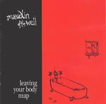

| Artist: | Maudlin Of the Well |
| Title: | Leaving Your Body Map |
| Label: | Dark Symphonies Dark 13 |
| Length(s): | 61 minutes |
| Year(s) of release: | 2001 |
| Month of review: | [02/2002] |
| 1) | Stones In October's Sobbing | 7.25 |
| 2) | Gleam In Ranks | 4.16 |
| 3) | Bizarre Flowers/a Violent Mist | 9.35 |
| 4) | Droodle 3 | 4.17 |
| 5) | The Curve That To An Angle Turn'd | 8.22 |
| 6) | Sleep Is A Curse | 5.37 |
| 7) | Riseth He, The Numberless | 4.17 |
| 8) | Droodle 4 | 5.11 |
| 9) | ?? | 5.10 |
| 9) | Monstrously Low Tide | 6.46 |
Bizarre Flowers/A Violent Mist is up next. A ponderous somewhat brooding track with many atmospheric ingredients. The slowness and plodding feel continues when the grunt vocals enter the picture again. Droodle 3 is a rather long one, compared to the others. World music percussion goes from ear to ear on this one, while the acoustic guitar and cello take care of the mournful melody. Later a moody clarinet adds to the depression.
The opening of The Curve That To An Angle Turn'd reminded me first of the atmospherics of Robert Fripp. A very atmospheric opening in fact, but grunt vocals and rhythm guitars scare the atmospheres away. The slow ponderousness stays. Sweet voices female vocals and whispered male ones figure in the hazy interlude. When I look into the booklet, the lyrics are written under the title Garden Song. The song ends with manic vocals and a good melodic after birth.
Sleep Is A Curse opens friendly enough with a folky melody, acoustic guitar and clear, melodious vocals, with a few dark tones inserted at the end. A bit more pace comes into it here, but the melancholy mood of the song stays.
Riseth He, Numberless beckons with a lone trumpet. After a minute or so the epic metal sets in again and the grunt vocals take the lead. Not a very friendly track this one, and one in which the metal reigns. But it is only the first one on this album of which that is the case.
Tormented screams in the back of Droodle 4. Again it shows that the band is at home at creating atmospheres with a very loose feel, but still conveying what seems to be the emotion intended. The music is also not without melody also later when the bombasm sets in. Very good. The grunt and death vocals get largely snowed under by the orgasm of sound. A majestic track, but not an easy one to like.
Christmas bells ring on the repetitive next track. Later we get some variety with the advent of violin. It seems that this is the track that is not mentioned anywhere on the cd's or booklets. So it is in fact Monstrously Low Tide that ends the album with heavy percussion and guitars and a percussive piano interjecting its sparse tones. After this loud opening, the acoustic guitars take over. This is easy-going pop with rather straightforward vocals. The final part of the track is simply meandering spacey guitar.